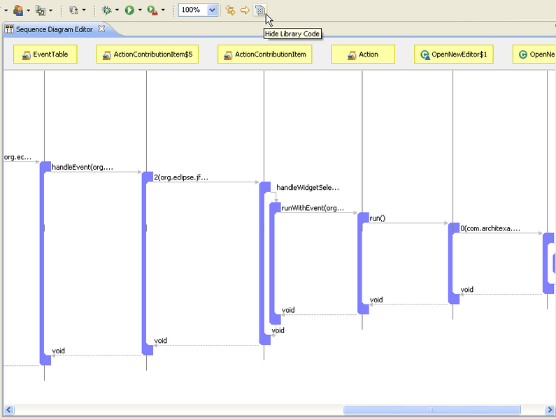
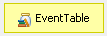
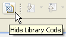
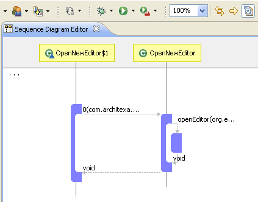
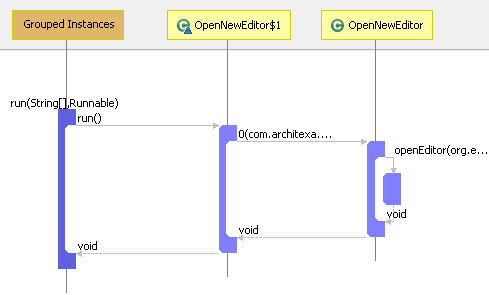
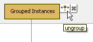

1. In Debug view toolbar, there is a dropdown menu "Open Stack Trace in Sequence Diagram".
Debug easily by using diagrams to see control flow
These instructions assume you are familiar with and use the eclipse debugger. If you would like more information about how to use the Eclipse Debug perspective, see Debugging with the Eclipse Platform.Once you are in the Debug view and can see a Thread's stack trace (the list of method calls made by the thread that leads to a breakpoint you have set), there are two ways to open it in a sequence diagram - via a menu in the Debug view toolbar and via a menu in the Thread context menu:
Using the toolbar menu or the context menu will have identical behavior; the options are simply accessible in two different locations for your convenience.
Next, choose how you would like library code in the generated sequence diagram to be displayed. There are 3 choices:
(1)

Library classes and any library code calls (such as EventTable.handleEvent() in the above diagram) are visible in the diagram. The jar icon  indicates that a class is library code. If after choosing this option, you later want to hide library code, click the Hide Library Code toggle button , which will remove all library code from the diagram. Hidden library code will appear as , as seen in the following diagram.

Click the Hide Library Code button again to toggle it off and display library code again.
(2)

All library classes and members are grouped into a single "Grouped Instances" element. For more on Grouping in Sequence Diagrams, see Grouping of Classes.
Mousing over the grouped class element shows all of the library classes contained within it:
And similarly, mousing over the grouped method element shows all the library methods:
Clicking on the grouped element reveals a button  to ungroup all the library code. Pressing the button will make the diagram look like the "Library Code Visible and Ungrouped" option described above in (1).
(3)

Library code will be hidden entirely in the diagram. (Choosing this option generates the same diagram as can be produced by choosing "Library Code Visible and Ungrouped" and using the "Hide Library Code" toggle button.)
Automatically updating the generated diagram
After generating a diagram from the stack trace, you can press the "Track Environmental Explorations" button to make the diagram automatically update itself. Specifically, as you use the eclipse debugger to step through statements or Resume execution, methods will automatically be added to the diagram as they are executed. If you enter a new execution trace, the diagram simply appends the new trace while still showing all previous traces so that they can always be referred to.
to make the diagram automatically update itself. Specifically, as you use the eclipse debugger to step through statements or Resume execution, methods will automatically be added to the diagram as they are executed. If you enter a new execution trace, the diagram simply appends the new trace while still showing all previous traces so that they can always be referred to.---- Your question not answered? Send an email to support@architexa.com ----
{kind=link}
{kind=link}
{kind=link}